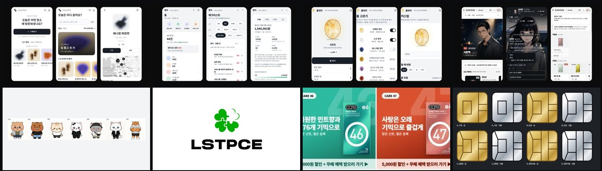
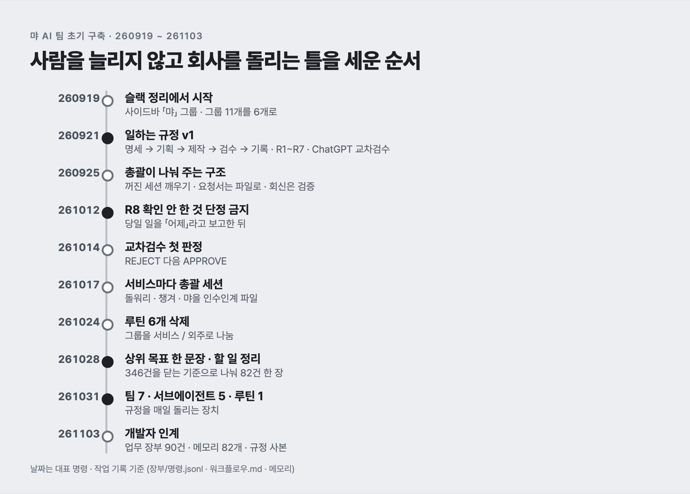

AX 기록
먀가 자기 서비스와 외주를 굴리면서 대표가 친 명령, 쓴 모델과 도구, 막힌 곳, 걸린 시간과 토큰까지 남겨요. 긴 제작기 3편, 짧은 기록 39편이에요.
먀 AI STUDIO 로고는 그림 생성 AI를 한 번도 쓰지 않고, 대표의 명령과 좌표로 그은 선으로 만들었어요. 어떤 순서로 다듬었고, 어디서 막혔고, 무엇이 남았는지 처음부터 끝까지 적었어요.

대표가 명령을 5,478번 쳤고 AI는 49,962번 답했어요. 그 사이에 만든 서비스 · 외주 결과물 · 사내 장치와, 대표가 직접 버린 것까지 장부 숫자와 실제 파일로 전부 펼쳐 놨어요.

먀는 사람을 늘리지 않고 회사를 돌리려고 AI가 일하는 틀부터 세웠어요. 260919 슬랙 정리 명령에서 261103 개발자 인계까지, 규칙 하나하나가 어떤 사고를 겪고 생겼는지 명령 순서대로 따라가요.
먀가 사람을 늘리지 않고 자체 서비스 · 외주 · 사내 도구를 만들면서 쌓은 것과, 그 과정에서 줄이고 버린 것을 한 편에 모았어요.
「작은 회사」에서 「직원 대신 구독」, 다시 「사업자에 끼우는 AX」까지 대표 말에 맞춰 소개 문장을 고치며 홈페이지를 다시 짰어요.
손님 문구 · 업체 메일 · 견적서 · 보고서마다 맞는 말투가 달라서, 문서 종류별로 말투 기준을 따로 세웠어요.
다른 회사의 AI 업무 시스템 영상을 기능 단위로 뜯어 챙겨와 비교하고, 근본 차이를 정리한 뒤 고객사별 업무 앱으로 넓혔어요.
맥 한 대에 쌓인 20GB 작업물을 글자는 저장소로, 그림은 드라이브로 나눠 올리고 업무 장부로 묶었어요.
숫자만 늘어놓던 보고서를 해석 상자와 용어 풀이가 붙은 월간 보고서로 바꾸고, 다음 달부터 명령 한 줄로 나오게 했어요.
지어낸 상황과 근거 없는 비교가 섞인 문안을 줄마다 판정하는 기준을 만들고, 새로 짓기 전에 대표가 고른 문안부터 꺼내 쓰게 했어요.
그림 속 문장을 본문에 그대로 넣었다가 지적받고, 본문은 이미 게시한 라인업 형식에 맞추는 규칙으로 정리했어요.
세로 9:16 소재에선 그림 속 행동 문구 띠를 빼고 위아래를 비우는 규칙을 만들었어요.
사람이 말을 걸어야만 움직이던 세션들에 총괄 · 팀 · 공용 서브에이전트 · 매일 루틴을 붙여, 정해진 일은 스스로 돌게 했어요.
브라우저 한 장짜리 작업실을 로컬 업무 앱으로 다시 만들면서, 파일을 원본으로 두고 근거 없는 체크는 앱이 받지 않게 했어요.
73개 폴더에 흩어진 할 일 346건을 기록 · 버린 일 · 끝난 일로 나눠 82건으로 줄이고, 매일 한 장만 보게 했어요.
총괄 세션에서 파생된 하위 세션이 다른 그룹으로 옮겨지지 않던 문제를, 저장 파일의 부모 표시를 지우는 도구로 풀었어요.
착수일이 지났는데 계정 · 치수 · 허가번호를 못 받고 있어서, 못 받은 것을 「관문」별로 한 장에 모으고 보낼 문안까지 만들었어요.
팀 작업실 앱에서 한 거래처 할 일이 다른 거래처 글로 바뀌어 보이는 버그를 재현하고, 원인인 번호 충돌을 찾아 비어 있는 접두어로 갈랐어요.
배란테스트기 패키지 작업을 외주로 넘기기 전에 「어느 수준까지 바꾸는지」를 세 단계 선택지로 물었고, 답에 따라 범위를 다시 잡았어요.
없는 기능으로 정리하라는 지시를 먼저 바로잡고, 파일을 옮기기만 해서 낱개 23개를 0개로 만들고 되돌리기 스크립트를 남겼어요.
먀 사이트 21페이지를 한꺼번에 점검했더니 팀 인원 · 버전 · 서비스 수가 페이지마다 달랐고, 고칠 것 · 물을 것 · 넘길 것을 나눠 처리했어요.
서비스 8개의 광고 소재를 처음부터 짰다가, 대표가 직접 만든 기존 배너에서 규칙 7개를 뽑아 다시 만들었어요.
이름도 쓰임새도 덜 정해진 캐릭터 7명 시트를 받아, 확인된 것과 추정을 갈라 적고 세계관을 열어 둔 채 전담 세션에 넘겼어요.
원석 사진 14장의 각도 · 모양 · 조명이 다 달랐고, 기준 사진 한 장을 참조로 다시 뽑아 크기와 중심까지 숫자로 맞췄어요.
장소 기록 앱 스샷이 창업 지원 심사에서 「왜 이 서비스에서 기록해야 하는지」로 막혔고, 겹치는 서비스 셋을 한 입구로 묶어 답을 다시 썼어요.
AI 티를 없애 준다는 디자인 레포 다섯 개를 설치하지 않고, 기계로 가를 수 있는 규칙만 빌려 우리 페이지를 검사하고 고쳤어요.
정리 앱 고요의 첫 판에서 카톡을 자동으로 못 읽고 글자 인식 라이브러리도 못 쓰는 벽에 막혔고, 붙여넣기와 누를 때만 AI 보기로 풀었어요.
챙겨 앱 본체는 Claude 아티팩트 주소에 있어 도메인으로 옮길 수 없었고, 소개 → 로그인 관문 → 앱 세 겹으로 사이트를 짰어요.
챙겨 광고 소재 10개를 만든 날 문구와 이름이 두 번 바뀌었고, 글자를 생성 모델에 맡기지 않은 덕에 같은 날 전부 다시 냈어요.
팀 작업실 앱 챙겨에서 기본 일정과 방을 고쳤는데 이미 만든 작업실엔 보이지 않았고, 빈 칸만 채우는 병합을 넣어 풀었어요.
챙겨 앱에서 목록 길이에 따라 화면이 흔들리고 카드가 밖으로 나가던 문제를 CSS 몇 줄로 잡았어요.
챙겨 오픈 점검을 ChatGPT 교차검수에 맡겼더니 금액 줄임과 명령조를 잡아냈고, 같은 꼴을 전부 고쳐 두 번째에 통과했어요.
챙겨 붙여넣기 기능을 만들다 두 번 막혔는데, 로컬 서버의 문자 인코딩과 구형 사파리가 모르는 정규식 문법이 원인이었어요.
바탕화면의 「스크린샷」 파일을 찾는 코드가 0개를 돌려줬는데, 맥이 한글을 자모로 나눠 저장한 탓이었어요.
카카오톡 「나에게 보내기」는 API로 읽을 수 없어서, 끌어오기 대신 붙여넣기와 AI 쪼개기로 먼저 풀었어요.
확인 안 한 날짜와 사실을 그럴듯하게 메운 일이 드러난 뒤, 출처를 못 대면 쓰지 않는 규칙을 전체 규정으로 올렸어요.
맥을 옮기며 원본과 사본의 파일 목록을 대조했더니 통째로 빠진 폴더가 2,015개 나와서, 포맷을 멈추고 다시 옮겼어요.
본문에 내용을 통째로 쓴 글 때문에 채널이 훑어지지 않아서, 본문은 제목 한 줄 · 내용은 댓글로 규칙을 정하고 지난 글 21건을 다시 올렸어요.
홈페이지 팀 소개와 지표에 들어간 경력 · 실적 숫자를 이력서와 대조했더니 출처를 댈 수 없는 것이 여럿 나와서, 고치거나 지웠어요.
고객이 읽는 페이지에 합니다체가 38곳 섞여 있어서, 페이지 성격에 따라 해요체와 합니다체를 나눠 정리했어요.
메인 컬러 실버를 스타일 파일에 만들어 두고도 화면에는 보이지 않았는데, 그 스타일을 붙인 요소가 0개였어요.
사업자 정보 · 단가 · 일부 지표가 정해지지 않은 채로 홈페이지를 열어야 했고, 모르는 칸은 지어내지 않고 보이게 비워 둔 채 먼저 열었어요.